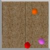
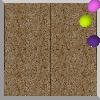
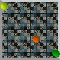

The dataset used in this exercise is a very tiny version of the counterfactual learning dataset we used in the following paper (This is not the real counterfactual learning dataset, which will be published later!!):
Fabien Baradel, Natalia Neverova, Julien Mille, Greg Mori, Christian Wolf. COPHY: Counterfactual Learning of Physical Dynamics. pre-print arXiv:1909.12000, 2019. [ArXiv]
The dataset has been created by my student Fabien Baradel during his PhD at INSA-Lyon.
We will take as input images of the following kind:
  The objective is to detect the spheres of different colors in the image. There are 9 different colored spheres:
COLORS = ['red', 'green', 'blue', 'yellow', 'lime', 'purple', 'orange', 'cyan', 'magenta']
Only 3 spheres will be in each individual image. We provide ground truth data for each image in the form of two matrices:
Task 1: Write a neural model which detects the presence of each of the 9 possible balls in each image.
Task 2: Augment the neural model such that it also detects the bounding box coordinates of the 3 balls which are present.
The set consists of 21000 images and ground truth matrices [TGZ].
Don't forget to split it into a training and a validation set.
Objective: Write a neural model, which takes two sequences of ball bounding box coordinates. Take the initial sequence of coordinates and predict the positions of the last instant.
This is actually an illposed problem, since the data has been created with several different physical properties, namely ball masses, friction coefficients, restitution coefficients. These coefficients are not observable from a single time instant (but they can be partially inferred by the network taking into account time). Therefore, do not expect the error to be close to zero.
The set consists of 7000 sequences, each composed of 20 time steps [TGZ].
Don't forget to split it into a training and a validation set.
Again, as before, only 3 spheres will be in each individual image. We provide ground truth data for each sequence in the follwing format:
Zip archive of the data loader for this sequences dataset: [ZIP].